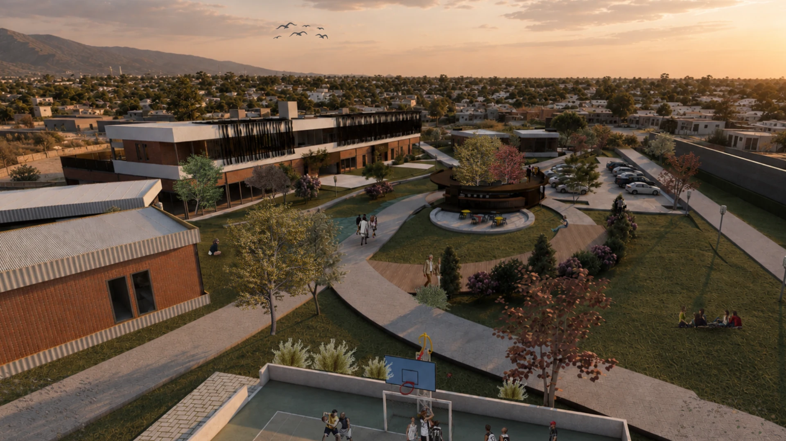
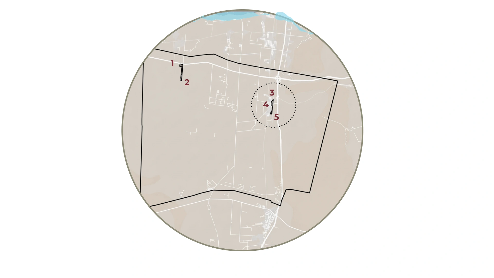
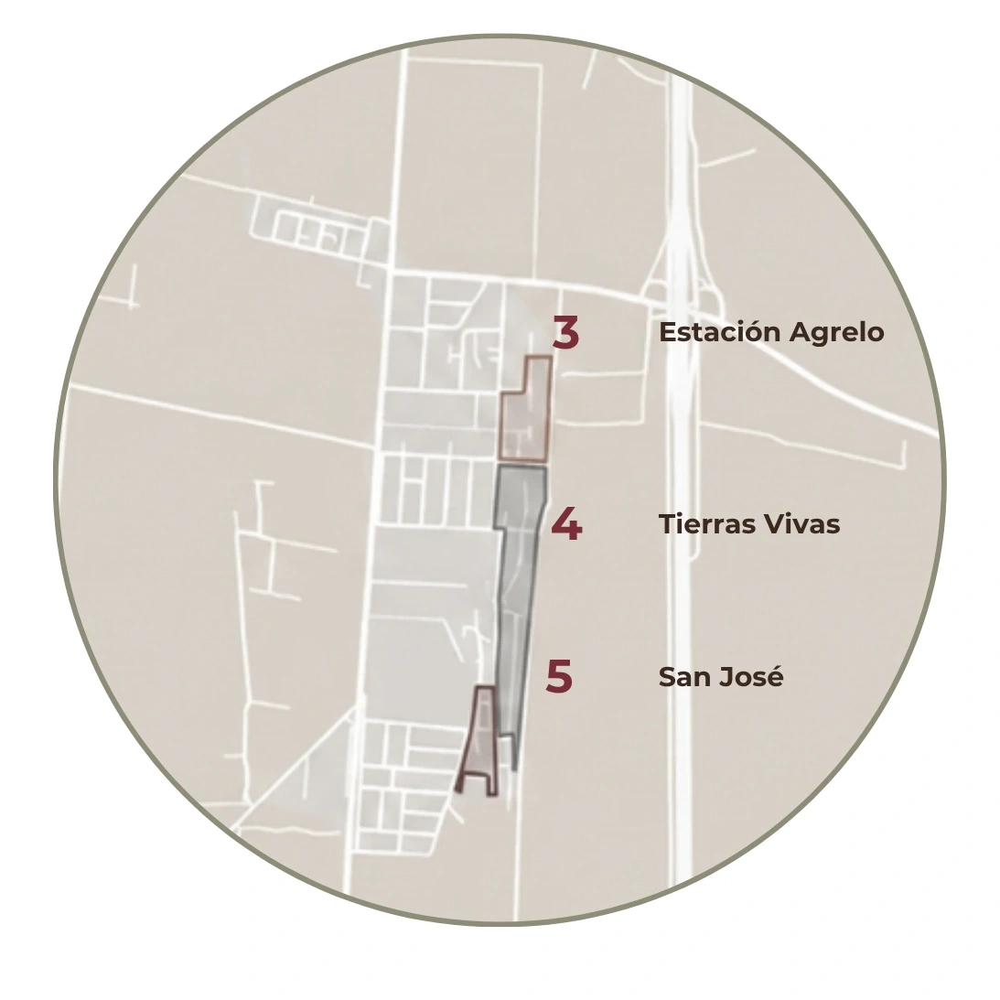
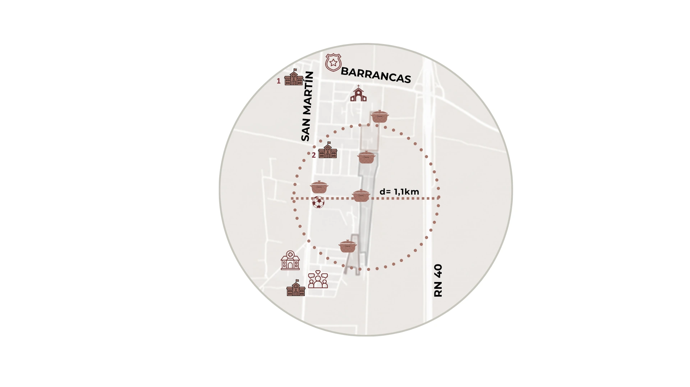
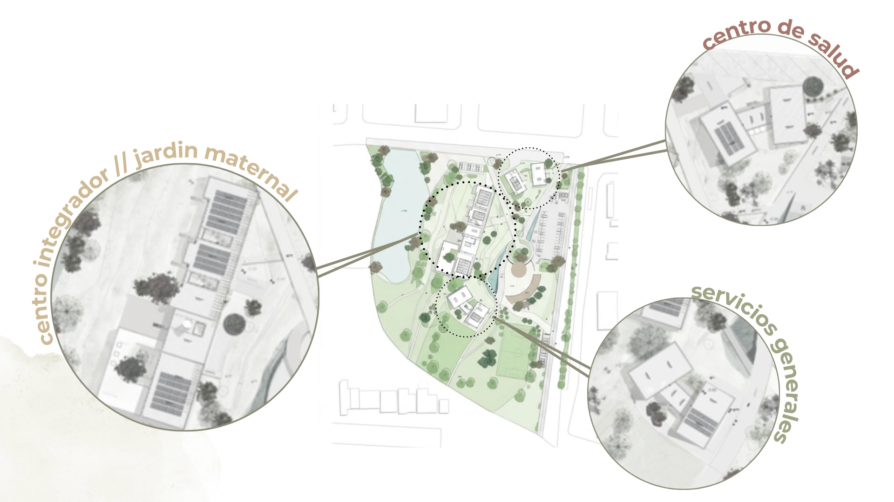
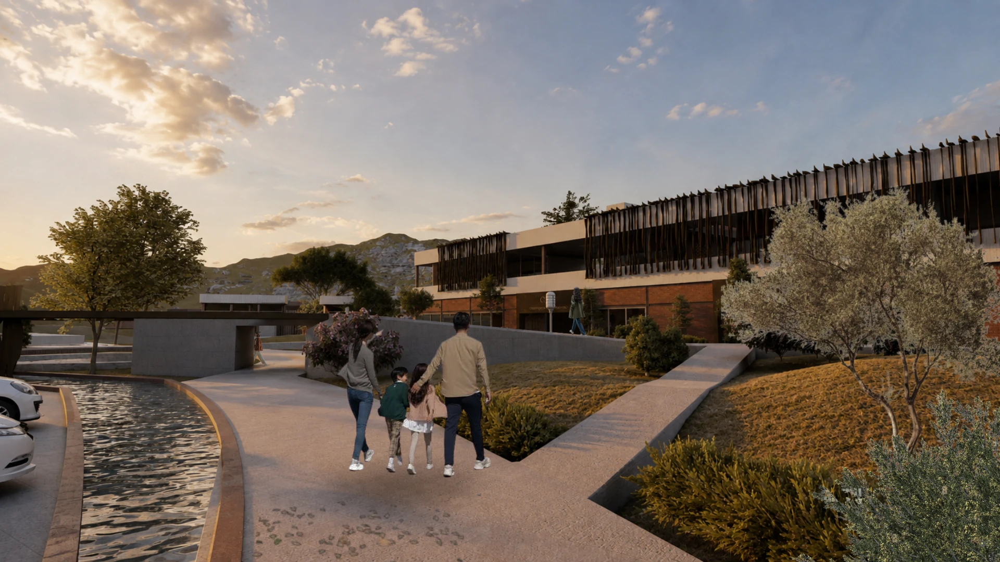
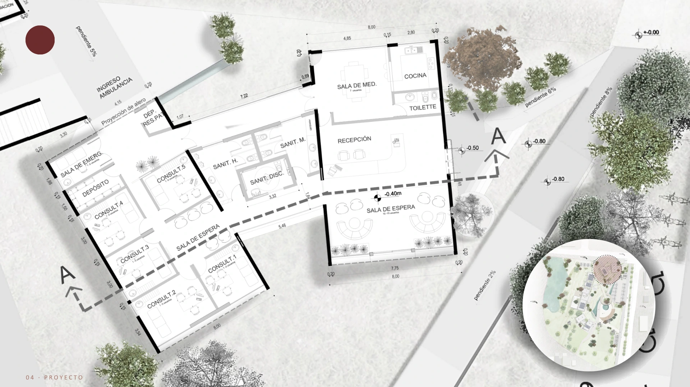
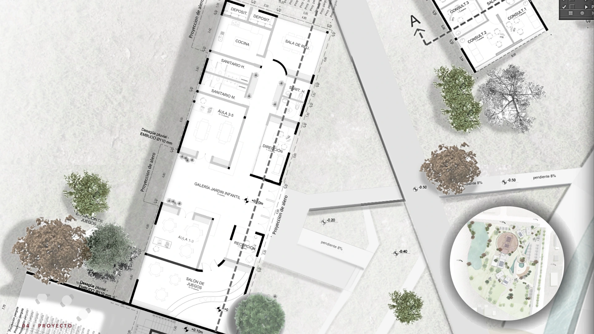
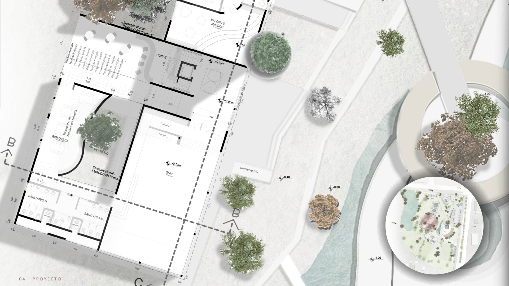

Proximidad
Acercar equipamientos esenciales al territorio para que el acceso a servicios no dependa exclusivamente del desplazamiento hacia otros sectores de Luján de Cuyo.

Camila Cicconi · Juan Pablo Torres
Asesor: Arq. Mario Raina · 2026
Equipamiento para la integración social y el fortalecimiento barrial.
Un equipamiento comunitario pensado para acercar derechos.
Conocer el proyecto ↓Introducción · Una arquitectura de proximidad
Nodo Comunitario Agrelo propone concentrar en un mismo sistema de proximidad funciones vinculadas con la salud, el cuidado, la integración y el espacio público. La arquitectura busca reducir distancias cotidianas y, al mismo tiempo, construir un lugar común para el barrio.
Acercar equipamientos esenciales al territorio para que el acceso a servicios no dependa exclusivamente del desplazamiento hacia otros sectores de Luján de Cuyo.
Reunir programas diferentes dentro de una estructura común, favoreciendo relaciones entre actividades de cuidado, salud, formación, recreación y encuentro.
Hacer del espacio exterior una parte activa del proyecto: recorridos, vegetación, agua y áreas de estancia articulan los edificios y construyen lugares de uso compartido.
Construir un conjunto reconocible, abierto al paisaje y capaz de funcionar como referencia comunitaria dentro de un territorio en proceso de consolidación.
Diagnóstico · Territorio
Agrelo atraviesa un proceso de crecimiento que vuelve visible una pregunta central: ¿cómo puede la arquitectura acompañar la consolidación del territorio y acercar servicios a la vida cotidiana? El proyecto toma esa distancia entre población, infraestructura y oportunidades como punto de partida.
Los barrios populares han experimentado un importante crecimiento durante los últimos años. Ese proceso modifica las demandas del territorio y vuelve necesario pensar equipamientos que acompañen la consolidación urbana con respuestas próximas y accesibles.
El crecimiento no siempre fue acompañado por infraestructura capaz de responder a las necesidades de sus habitantes. El resultado es una mayor distancia respecto de servicios esenciales y de oportunidades vinculadas con el cuidado, la salud, la integración y la vida comunitaria.
El crecimiento registrado en estos barrios evidencia la necesidad de incorporar un equipamiento comunitario capaz de acompañar los procesos de consolidación urbana y fortalecer el desarrollo social del sector.



Diagnóstico · Necesidades y derechos
El programa se organiza alrededor de cuatro dimensiones de la vida comunitaria. Cada pieza tiene una función concreta, pero también forma parte de una idea mayor: hacer más próximo el acceso al cuidado, la salud, la integración y el espacio público.
El jardín maternal incorpora espacios destinados al cuidado, la estimulación y el desarrollo integral durante la primera infancia, integrándolos a una red comunitaria más amplia.
El centro de salud acerca atención primaria, prevención y promoción de la salud, reduciendo la distancia entre la vida cotidiana del barrio y un servicio esencial.
El centro integrador comunitario ofrece ámbitos para capacitación, acompañamiento, fortalecimiento comunitario y actividades compartidas que consolidan redes sociales.
Recreación, deporte y encuentro comunitario se incorporan como parte del programa. El espacio público deja de ser un resto entre edificios y se transforma en infraestructura social.
Una misma estrategia territorial articula cuidado, salud, integración y espacio público. Los edificios no funcionan como piezas aisladas: el valor del nodo aparece en la proximidad y en las relaciones que se construyen entre ellos.
Antecedentes · Referentes y criterios proyectuales
La tesis estudia antecedentes de centros de salud, centros integradores y jardines maternales en escalas internacional, nacional y provincial. Más que reproducir modelos, el análisis permite reconocer decisiones espaciales que luego orientan el Nodo Comunitario Agrelo.
Los centros de salud analizados ponen en valor la iluminación y ventilación natural, los patios, la diferenciación de accesos y una circulación ordenada entre áreas de atención, espera y servicio.
Los centros comunitarios muestran la importancia de reunir programas sociales, educativos, sanitarios y de encuentro en espacios accesibles, flexibles y capaces de adaptarse a distintas actividades.
Los jardines estudiados priorizan patios interiores, relación directa con el paisaje, iluminación y ventilación natural, flexibilidad y ambientes seguros adecuados para la primera infancia.
Proyecto · Implantación y organización del nodo
La implantación distribuye los distintos equipamientos alrededor de una red común de circulaciones y espacios abiertos. Cada edificio conserva su identidad y sus requerimientos, pero la relación entre ellos es lo que termina de construir el nodo.
El espacio central, los recorridos peatonales, la vegetación y las áreas de permanencia construyen continuidad entre las piezas. De este modo, desplazarse de un programa a otro también significa atravesar espacios de encuentro, descanso y paisaje.
Atención, prevención y promoción de la salud.
Recreación, deporte y encuentro comunitario.
Capacitación, participación y fortalecimiento social.
Cuidado y primera infancia.

Los recorridos conectan los distintos programas y permiten entender el conjunto como una red.
El espacio central organiza orientaciones y encuentros, construyendo una referencia común para las piezas.
Vegetación, agua y superficies de permanencia forman parte de la experiencia cotidiana del nodo.

Una infraestructura de proximidad
La propuesta reúne edificios, recorridos y paisaje en una única experiencia de proximidad. El objetivo no es solamente alojar funciones, sino construir un ámbito cotidiano donde distintos servicios y formas de encuentro puedan coexistir.
Proyecto · Programa y espacios
El proyecto organiza salud, cuidado e integración comunitaria en edificios diferenciados pero vinculados por el espacio público. Las plantas permiten reconocer cómo cada programa responde a sus usos específicos sin perder la continuidad del conjunto.
La planta baja organiza consultorios, salas de espera, recepción y áreas de apoyo en relación directa con los recorridos exteriores. La atención primaria se incorpora al nodo como un servicio cercano y accesible.

Las aulas, áreas de juego, galería y espacios de apoyo se articulan alrededor de ámbitos seguros y próximos al exterior. El cuidado de la primera infancia se integra así a la vida cotidiana del nodo.

El centro integrador reúne espacios flexibles para encuentro, formación, participación y actividades comunitarias. Su relación con patios, circulaciones y áreas abiertas refuerza el carácter colectivo del proyecto.

Proyecto · Experiencia y atmósferas
Las visualizaciones permiten recorrer el proyecto desde la escala de quien lo habita. Interiores, expansiones y espacio público comparten una materialidad cálida, transparencias, filtros solares y una relación constante con el paisaje.
Proyecto · Materialidad y lenguaje arquitectónico
Las visualizaciones combinan tonos tierra, superficies de madera, mampostería y elementos verticales de protección que filtran la luz y construyen profundidad en las fachadas. En los interiores, esa misma paleta busca generar ámbitos próximos y reconocibles.
La materialidad no se plantea sólo como una decisión de imagen. También define filtros, sombras, transiciones entre interior y exterior y distintas condiciones para permanecer, encontrarse o circular.
Nodo Comunitario Agrelo
“La pobreza no es solamente la falta de recursos. También es la distancia a las oportunidades.”